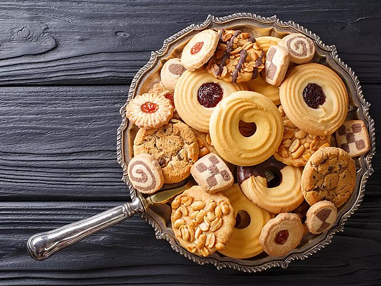

Biscuits

Description
Biscuits are a traditional bread from the American South
and a staple of soul food. This recipe is in the Yankee style,
which is to say, it contains an egg and the end result is less dependent on your
pastry technique.
These biscuits are tall, light, and sturdy. They taste good plain or with
butter, honey, jam, or sausage/ham gravy.
Ingredients
- Flour - 3 cups / 13 ounces / 375 grams
- Baking powder - 4½ teaspoons / 0.7 ounces / 21 grams
- Cream of tartar - ¾ tsp teaspoons / 0.07 ounces / 2 grams
- Sugar - 2½ tablespoons / 1.06 ounces / 30 grams
- Salt - ¾ teaspoons / 0.18 ounces / 5 grams
- Butter - ¾ cups / 5.3 ounces / 150 grams
- An egg, beaten - about 1.76 ounces / 50 grams
- Milk - 1 cup / 8.6 ounces / 245 grams
Steps
- Preheat oven to 450°F (230°C).
- Sift all dry ingredients into a bowl.
- Cut in butter until it has the texture of coarse meal.
- Beat egg lightly and add to milk.
- Add liquid to dry ingredients and mix with fork just
until dough holds together.
- Turn out onto floured board and knead lightly with floured fingers.
- Roll out ¾ inch (2 cm) thick, and cut out biscuits
with a round, floured cutter.
- Place biscuits on baking sheet and bake at 450°F (230°C) for 12 minutes.
Home